A second take on a question first asked in 2022: what if the whole life of a garment — donation, sorting, resale, repair and finally breaking it back down to fibre — happened inside the neighbourhood that wears it? This version pulls the four processes into a single, denser building and puts the public route straight through the middle of them.
A recycling plant on a residential street
The building sits among apartment blocks and street frontage rather than on an industrial edge, which is the point: the shorter the distance between where clothes are discarded and where they are processed, the less of the system is spent on moving them around. Keeping it here also means residents pass it whether or not they came for it.
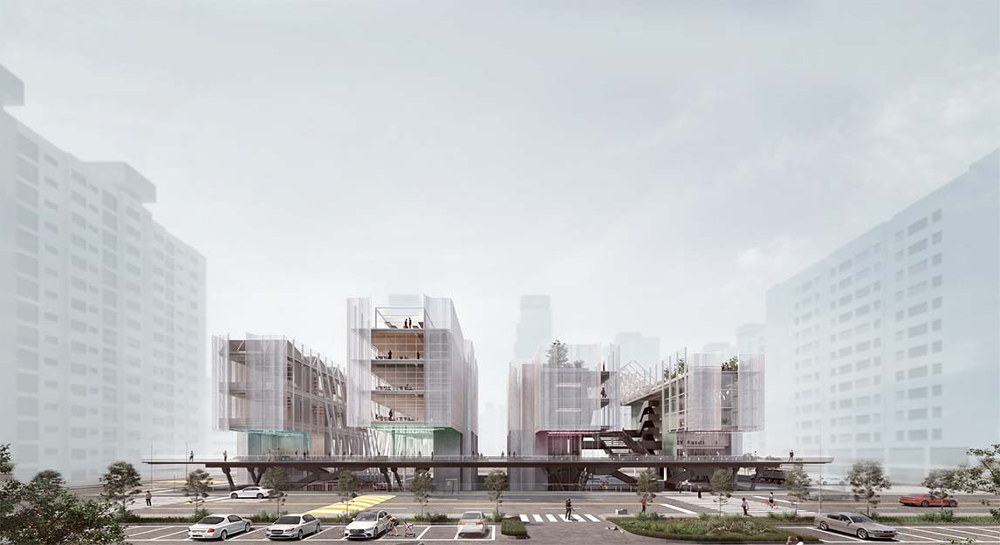
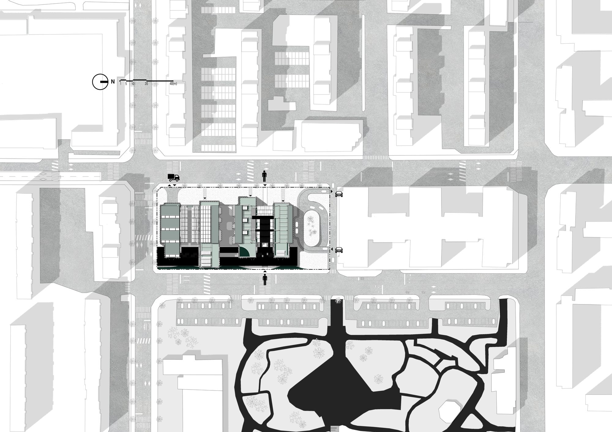
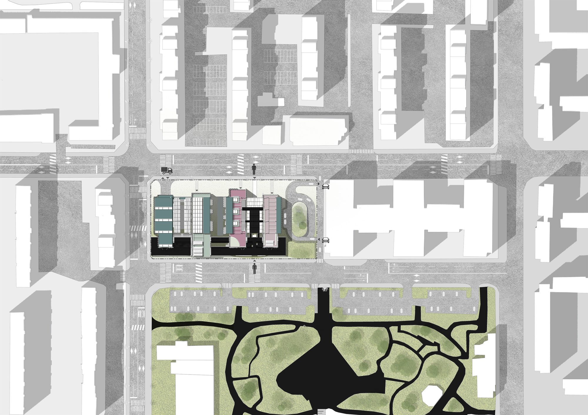
Handing a garment over
The public entry is the point of donation. Drop-off, fitting and sorting are placed at the front, in full view, so the first act of the system is something a visitor performs rather than watches. From here a garment branches: back out to be worn again, sideways to be repaired or redesigned, or down to be broken into fibre.
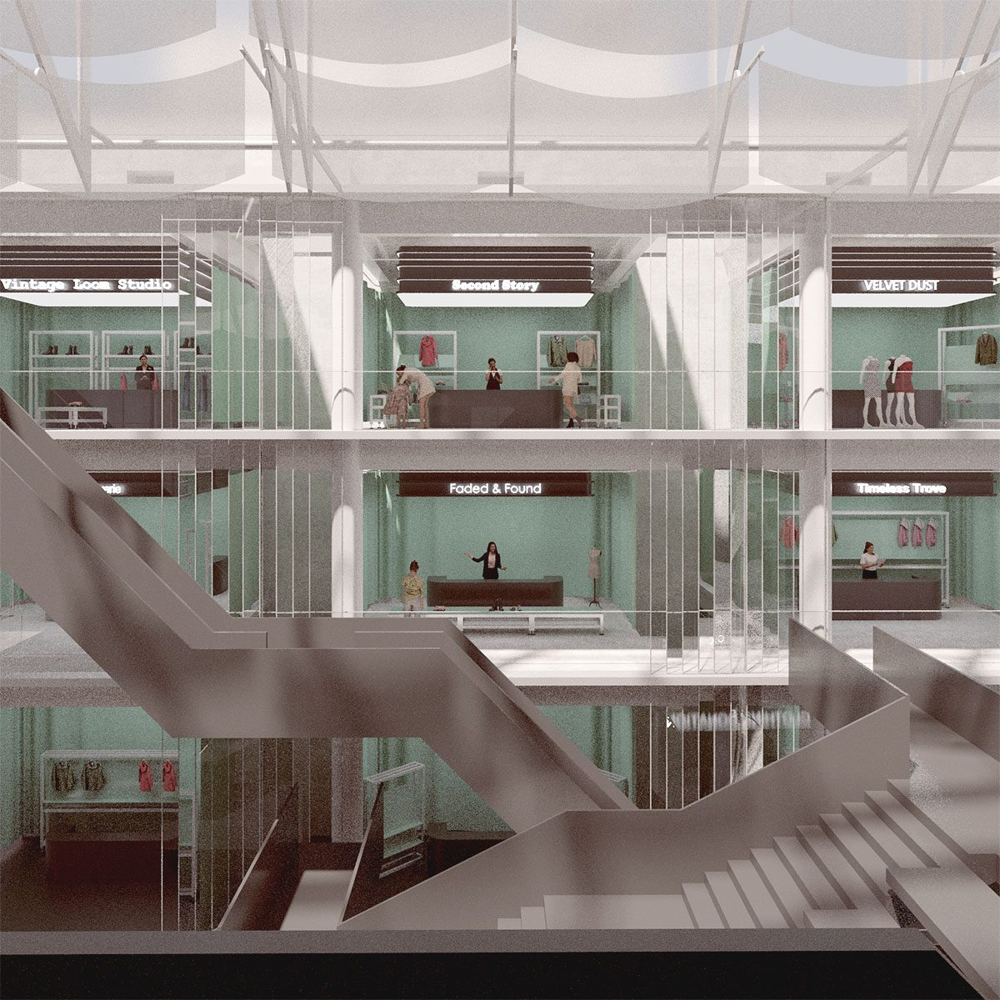

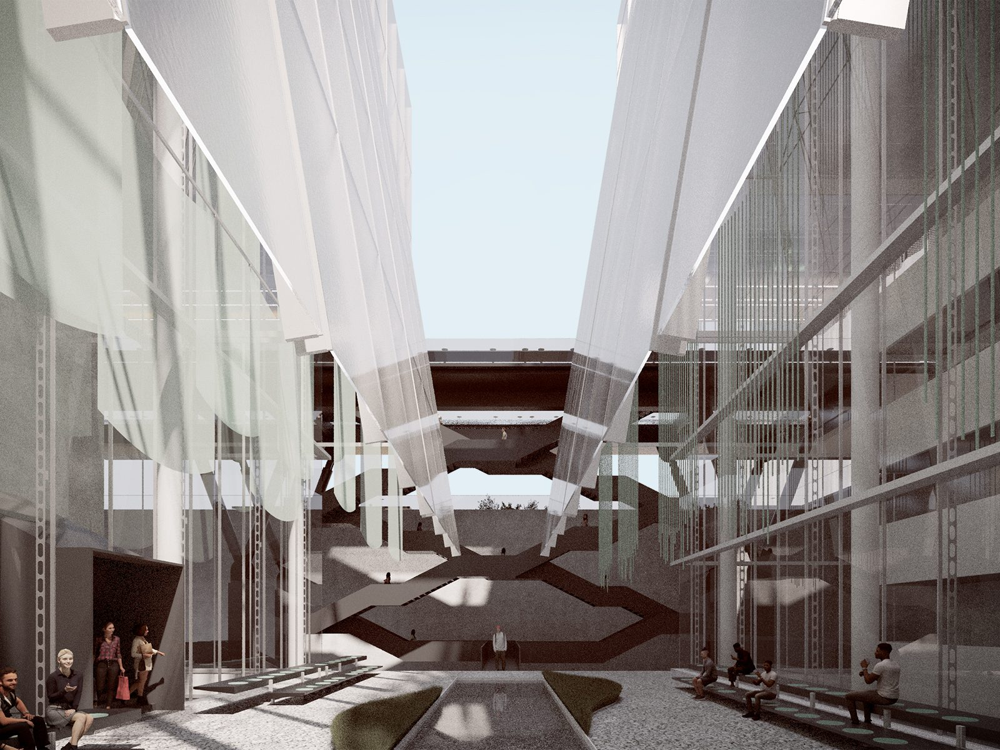
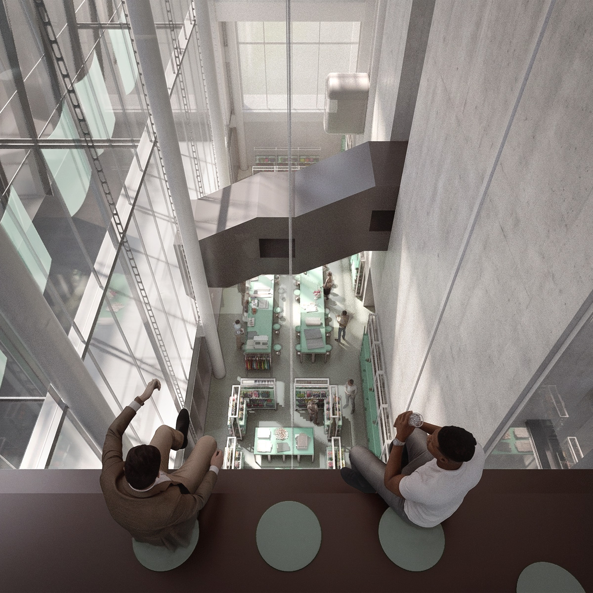
The processing floors
Behind the public rooms are the working ones, where sorted garments are moved by conveyor, stripped and re-made. These floors are not hidden away; they are given the same daylight and the same glazing as the shops, because a system that asks for participation cannot keep its least glamorous half out of sight.
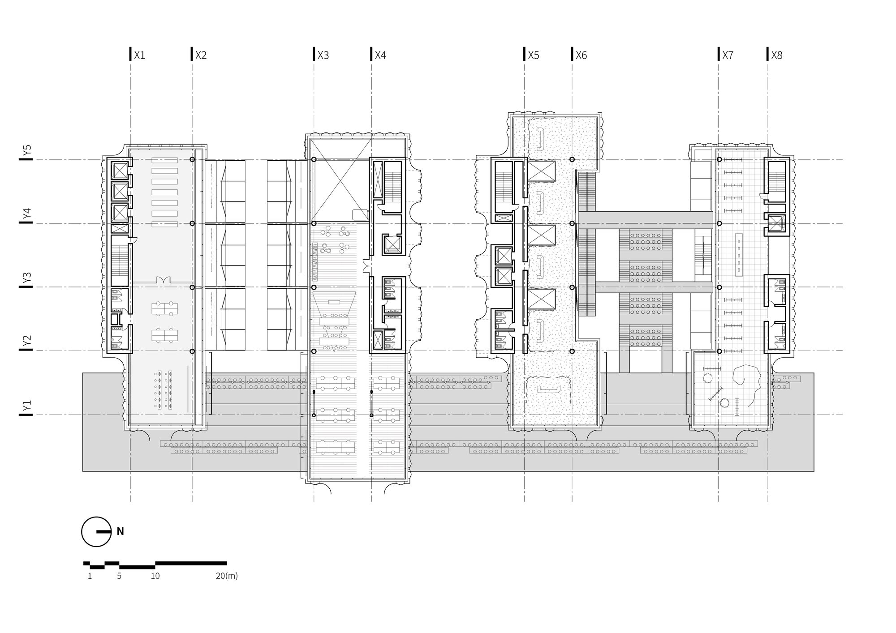
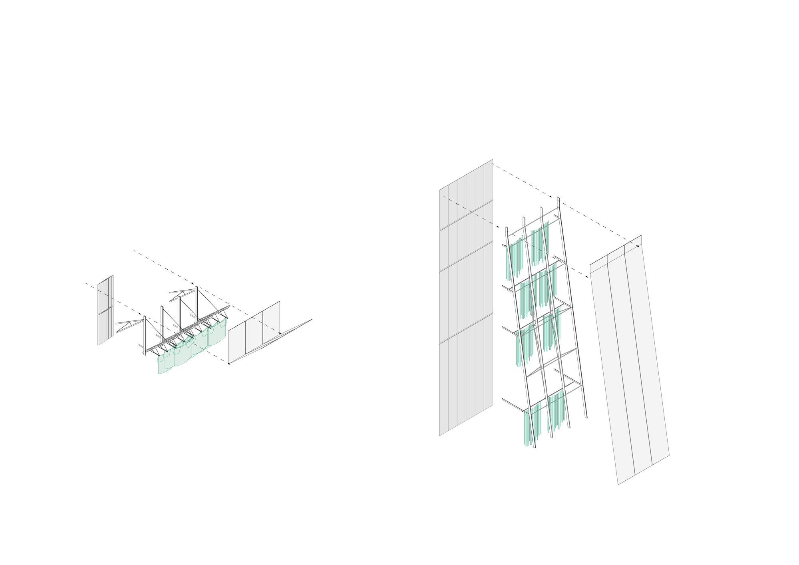
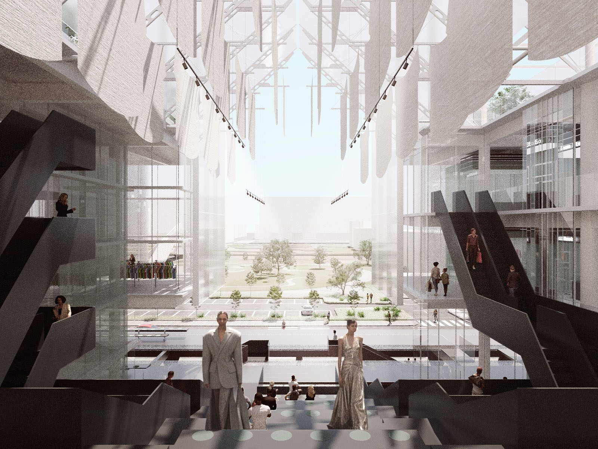
The alley, and the street beneath
A glazed alley runs through the building, giving the neighbourhood a way across the site and a view into the process on both sides. At the ground it opens back onto the street, so the building reads less as a plant than as a covered piece of the neighbourhood that happens to recycle what it wears.
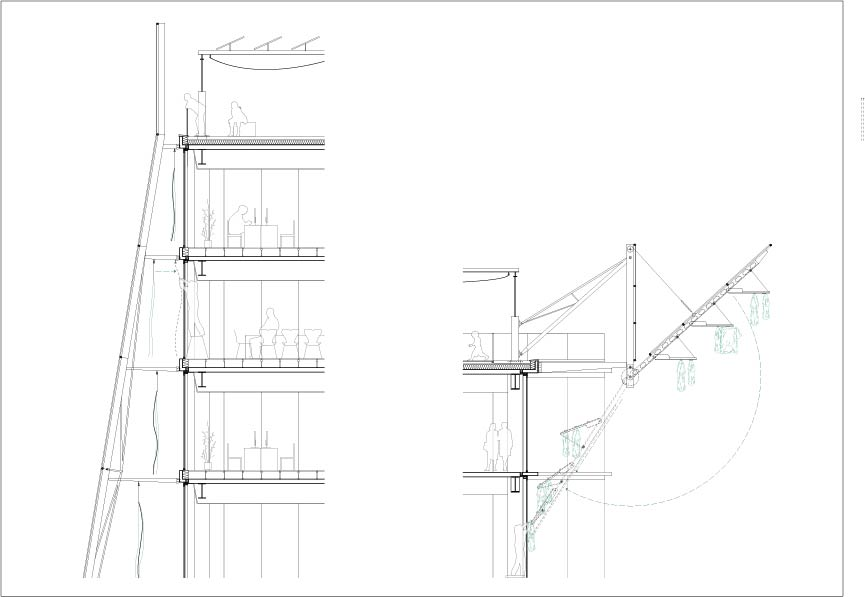

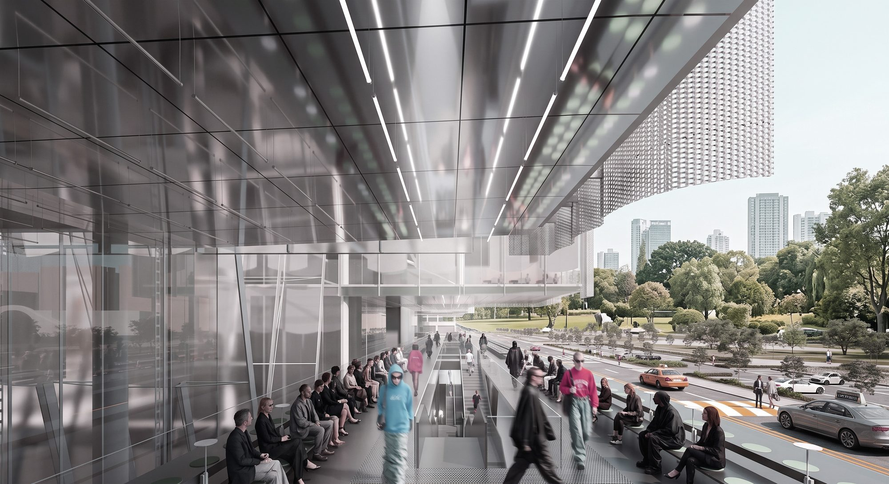